レア
ガブリエラ設定画
先輩天使ガブリエラの設定画。銀髪ロングに翠の瞳、大きな白い翼と白×金の正装が特徴です。第7弾のすべての場面は、この姿を基準に描かれています。
第7弾「先輩視察編」のカード全31種（設定画を含む）です。先輩天使ガブリエラの視察と、少しずつ染まっていく変化の場面です。
カードの画像はWeb鑑賞用サイズです。原画の高解像度イラストは、この弾のイラストパックでご覧いただけます。
この弾の所持 0 / 31種（0%）― あと31種で、この弾はコンプリートです
カードの画像はWeb鑑賞用サイズです。原画の高解像度イラストは第7弾『先輩視察編』のパック紹介ページからBOOTHのパックでご覧いただけます。ガチャで所持しているカードには「所持 ×N」と表示されます。
レア
先輩天使ガブリエラの設定画。銀髪ロングに翠の瞳、大きな白い翼と白×金の正装が特徴です。第7弾のすべての場面は、この姿を基準に描かれています。

激レア
金色の光の渦から、凛とした姿で日本橋へ降臨するガブリエラ。セラフィナの視察のため、天界から先輩天使がやって来ました。第7弾の幕開けです。

レア
駆け寄って抱きつくセラフィナに、照れるガブリエラ。久しぶりの再会に、紙袋の中のモコも嬉しそうに顔を出しています。
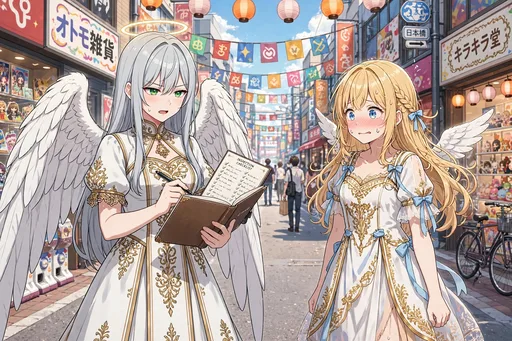
ノーマル
手帳とペンを手に、チェック項目を読み上げるガブリエラ。その前で背筋を伸ばして汗をかくセラフィナ。視察の日々が始まります。
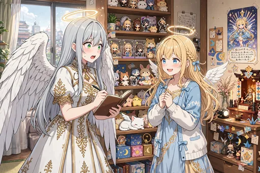
ノーマル
セラフィナの部屋を視察する場面。ずらりと並ぶグッズ棚と推し祭壇に、先輩天使は目を丸くしています。
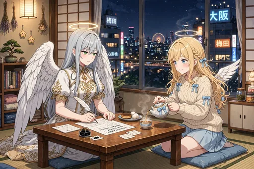
ノーマル
夜、視察の報告書を執筆するガブリエラの横で、お茶を出すセラフィナ。厳しい評価が書かれるのか、少し気になる夜です。
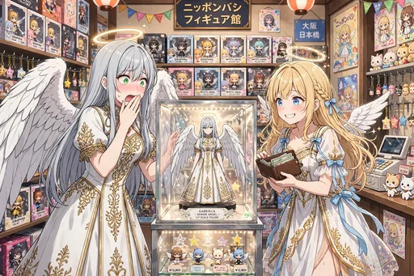
ノーマル
フィギュア店で、自分そっくりの上級天使フィギュアを見つけて固まるガブリエラ。視察中のはずが、目が離せなくなっています。
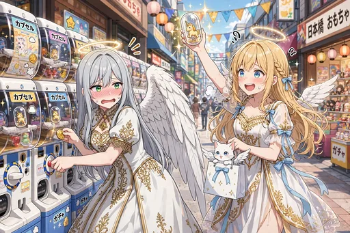
ノーマル
ガチャを監督するはずが、こっそり自分も回してしまうガブリエラ。罪悪感とワクワクが入り混じる一枚です。
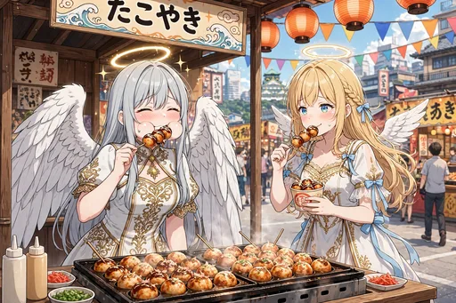
ノーマル
たこ焼きを品定めするような顔で眺めていたガブリエラが、一口食べて目を輝かせる場面。日本橋の味の洗礼です。
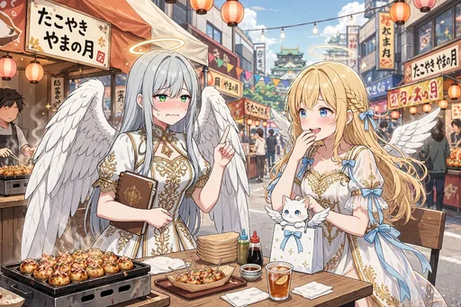
ノーマル
たこ焼きのおかわりを頼んでしまい、我に返って赤面するガブリエラ。美味しさには、天使の規律もかないません。
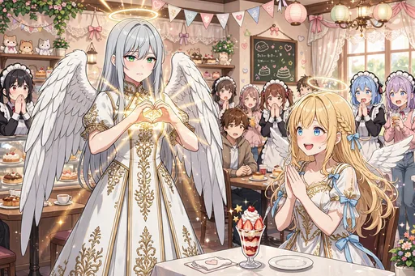
ノーマル
メイドカフェを視察する場面。「萌え萌えきゅん」で本物の祝福の光が出てしまい、店内は騒然。視察は一筋縄ではいきません。
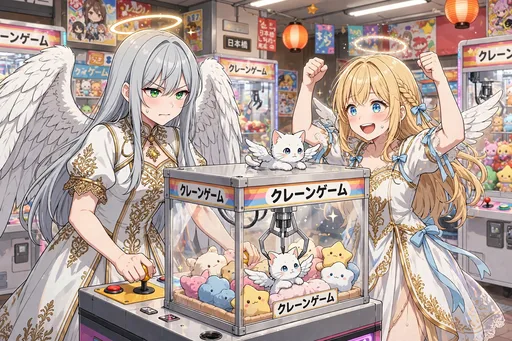
ノーマル
クレーンゲームを「訓練」と称して、本気の集中を見せるガブリエラ。先輩の意地がかかった挑戦です。
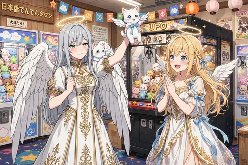
レア
子猫のぬいぐるみを取って誇らしげなガブリエラと、拍手するセラフィナ、肩のモコ。訓練の成果が実を結びました。
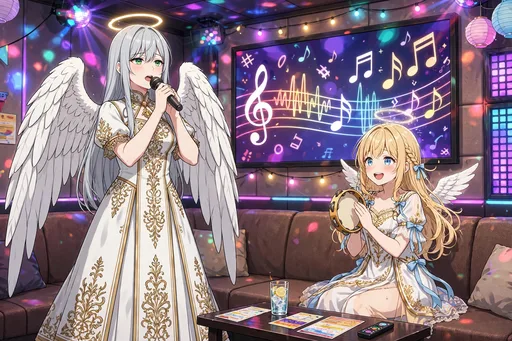
ノーマル
カラオケで聖歌隊のように直立して歌うガブリエラ。真面目な姿勢と選曲のギャップが笑いを誘います。
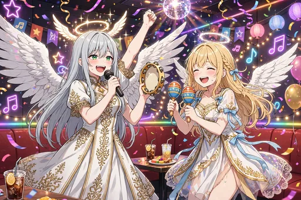
レア
タンバリンを振って拳を上げるまでに染まったガブリエラのカラオケ場面。視察の先輩も、日本橋の夜には勝てません。
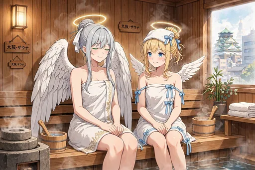
ノーマル
サウナで「整う」を体験するガブリエラ。静かに目を閉じるととのい顔は、天界では味わえない境地です。
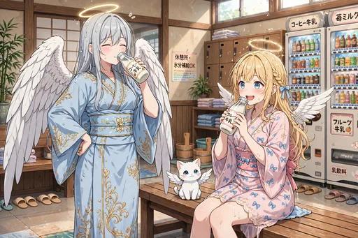
ノーマル
銭湯上がり、腰に手を当ててコーヒー牛乳を飲むガブリエラ。日本の銭湯文化に、すっかり馴染んできました。
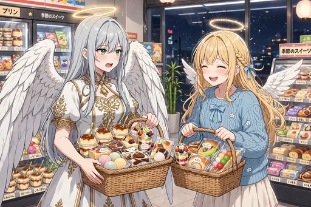
ノーマル
コンビニスイーツを「調査」と称して買い込むガブリエラ。視察の名目と、つい伸びてしまう手が正直です。
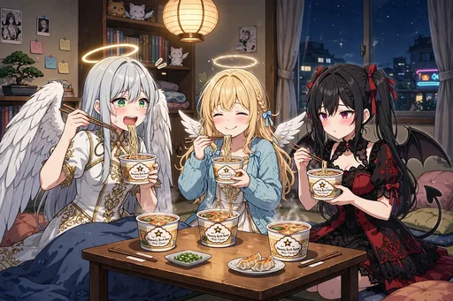
ノーマル
深夜のカップ麺に感動の涙を流すガブリエラ。ルチアとセラフィナも一緒の、夜更かしの味です。
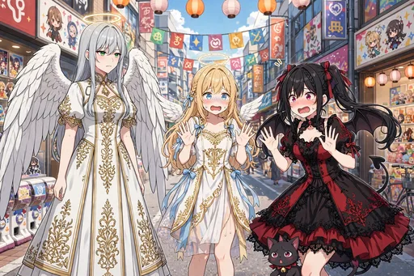
レア
ルチアと初対面する場面。凛とするガブリエラに怯むルチアと足元のノワール、間に入るセラフィナ。天使と悪魔と先輩の顔合わせです。
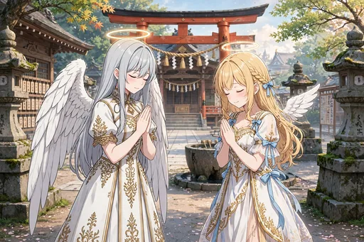
ノーマル
神社で丁寧に二礼二拍手一礼をするガブリエラ。日本の神様への作法にも、敬意を持って臨みます。
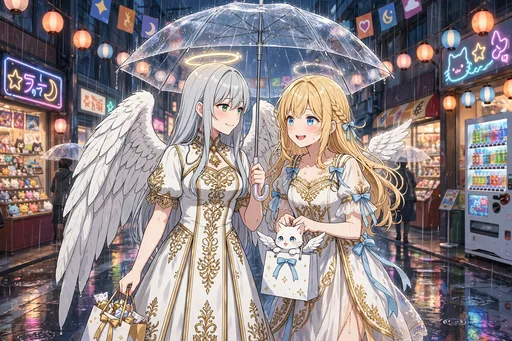
ノーマル
雨の日本橋で、透明傘を仲良くさすセラフィナとガブリエラ。紙袋の中のモコも濡れずに済みました。
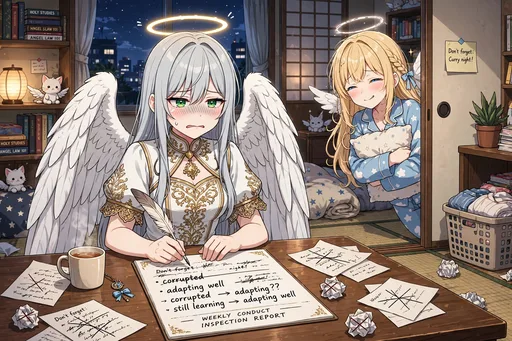
ノーマル
報告書の「堕落」という言葉を「順応」に書き直して悩むガブリエラ。後ろではセラフィナが眠そうに笑っています。
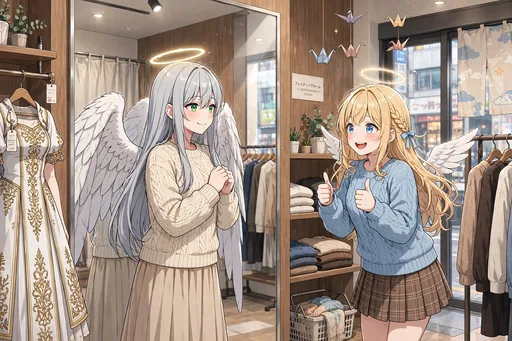
ノーマル
私服を試着して鏡の前でまんざらでもないガブリエラと、サムズアップのセラフィナ。先輩の新しい一面です。
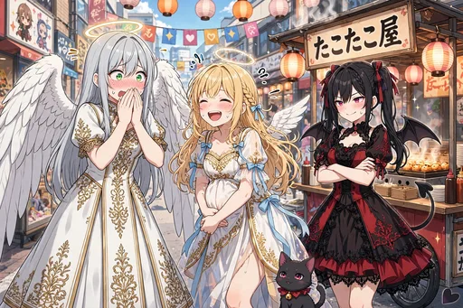
ノーマル
思わず関西弁が出て口を押さえるガブリエラと、爆笑のセラフィナ、したり顔のルチアとノワール。染まり具合は言葉にも表れます。
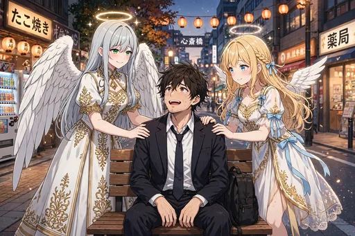
ノーマル
疲れた会社員の両脇で、そっと肩に手を添えるセラフィナとガブリエラ。視察の締めくくりは、癒しの本分でした。
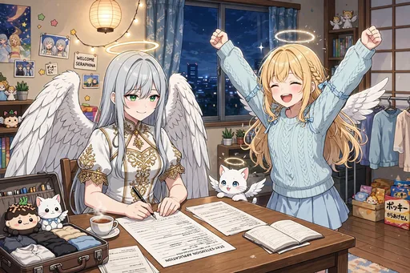
ノーマル
「もう少し様子を見る」と滞在延長申請書を書くガブリエラ。喜ぶセラフィナと、机の上のモコが見守ります。
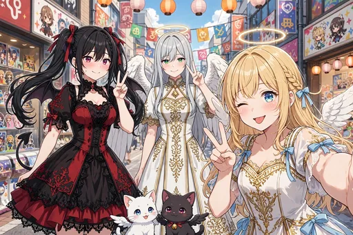
レア
セラフィナ、ルチア、ガブリエラと、モコとノワールで撮る自撮り風のグループ写真。視察は、いつの間にか楽しい滞在になっていました。
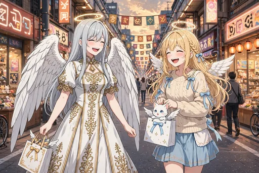
ノーマル
夕暮れのオタロードを、紙袋を提げて笑い合って歩くセラフィナとガブリエラ。先輩と後輩の距離が近づいた帰り道です。
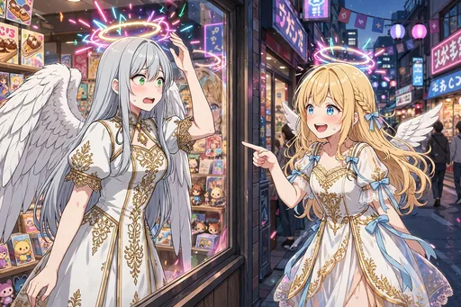
レア
ショーウィンドウの映り込みで、自分の輪がネオン色に染まっていることに気づくガブリエラ。日本橋に染まった証です。

激レア
日本橋の夜景を背に、中央にガブリエラ、左にセラフィナ、右にルチア、足元にモコとノワール。金と紫の光が交わる、第7弾のキービジュアルです。